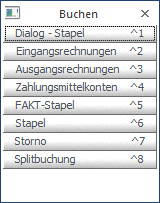

In WinLine FIBU gibt es verschiedene Möglichkeiten, Buchungen durchzuführen. Damit alle diese Möglichkeiten möglichst übersichtlich dargestellt werden können, können die einzelnen Menüpunkte nicht nur über die Menüstruktur, sondern auch über sogenannte "Shortcuts" aufgerufen werden.
Damit das Aufrufen von verschiedenen Buchungsprogrammen noch einfacher wird, gibt es eine eigene Buchen-Buttonleiste, mit der die einzelnen Buchungsprogramme aufgerufen werden können. Diese Buchen-Buttonleiste wird entweder über den Menüpunkt
1 Buchen
1 Buchen-Buttonleiste
oder mit Schnellaufruf
1 STRG + B
geöffnet.

Die Buttonleisten können beliebig verschoben werden. Die letzte Position des Fensters wird solange gespeichert, bis das Programm beendet wird.
Die einzelnen Buchungsprogramme können dann durch Anklicken der entsprechenden Buttons bzw. durch Drücken der entsprechenden Tastenkombinationen z.B. STRG + 1 für Buchen Dialog - Stapel geöffnet werden.